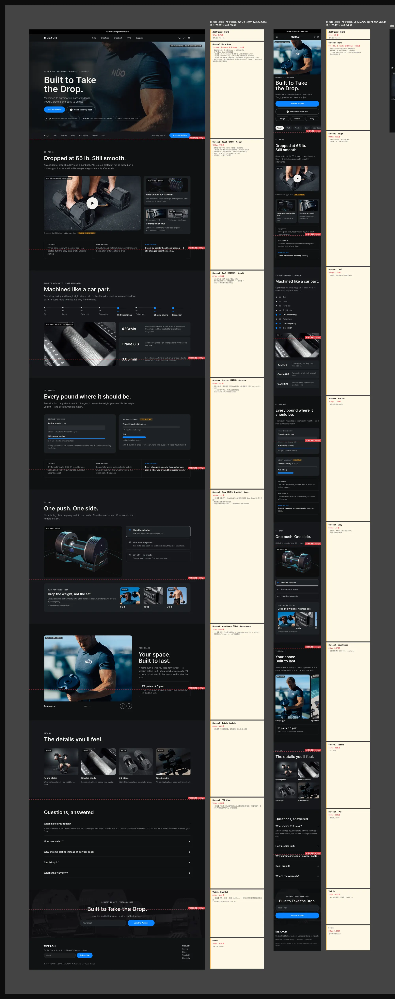

Explore 教育页 · 开发需求说明
一、基本信息
- 页面：P19 Explore 教育页，独立站单页，8 屏 + 页头页脚。
- 设计基准：PC 1440 宽，内容区 1200，左右边距 120；Mobile 390 宽，左右边距 16，内容区 358。
- 断点建议：≥1024 用 PC 布局；768–1023 内容区自适应，网格降为 2 列；<768 用 Mobile 布局。
- 屏占比口径：PC 按视口 1440×900 计 1 屏，Mobile 按 390×844 计 1 屏。
- 英文主张 Built to Take the Drop 待确认，文案以上线前定稿为准。
二、屏占比
首屏（Header + Hero + 锚点栏）在 PC 端正好 1 屏；其余每屏控制在 0.6–1.1 屏，单屏不需要内部滚动。
| 模块 | 锚点 | PC 高度 px | PC 屏占比 | Mobile 高度 px | Mobile 屏占比 |
|---|---|---|---|---|---|
| Header（广告位 + 导航） | — | 101 | 0.11 | 89 | 0.11 |
| Screen 1 · Hero + 锚点栏 | #top | 799 | 0.89（与 Header 合计 1.00） | 681 | 0.81（与 Header 合计 0.91） |
| Screen 2 · Precision-Machined | #machined | 900 | 1.00 | 901 | 1.07 |
| Screen 3 · Drop-Tested | #drop-tested | 900 | 1.00 | 810 | 0.96 |
| Screen 4 · Drop Set | #drop-set | 860 | 0.96 | 669 | 0.79 |
| Screen 5 · How It Works | #how-it-works | 860 | 0.96 | 805 | 0.95 |
| Screen 6 · Built Different | #built-different | 900 | 1.00 | 867 | 1.03 |
| Screen 7 · Your Space | #your-space | 720 | 0.80 | 571 | 0.68 |
| Screen 8 · FAQ | #faq | 533 | 0.59 | 659 | 0.78 |
| Waitlist | #waitlist | 340 | 0.38 | 358 | 0.42 |
| Footer | — | 260 | 0.29 | 213 | 0.25 |
| 合计 | 7173 | 7.97 屏 | 6623 | 7.85 屏 |
三、全局规范
颜色
| 用途 | 色值 | 使用位置 |
|---|---|---|
| 主色 | #0A84FF | 按钮、Eyebrow、链接、强调线 |
| 正文深色 | #0B0B0C | 标题 |
| 正文灰 | #5F6368 | 正文、说明 |
| 浅灰底 | #EDF0F3 | Screen 2 / 6 / FAQ 背景 |
| 黑底 | #000000 | Hero、Screen 4、Screen 7 |
| 页头页脚 | #111214 | Header / Footer |
字号
设计稿字体为 Inter；如独立站已有品牌字体，以站内字体为准，字号与字重按下表。
| 层级 | PC | Mobile |
|---|---|---|
| H1 | 60 / Extra Bold | 40 / Extra Bold |
| H2 | 40 / Bold | 28 / Bold |
| Eyebrow | 13 / Semi Bold，全大写，字距 8% | 11 / Semi Bold |
| 正文 | 17 / Regular，行高 150% | 15 / Regular |
| 说明 | 14 / Regular | 12 / Regular |
| 按钮 | 15 / Semi Bold，高 52，全圆角 | 同 PC，通栏 |
圆角：图片 14–16，卡片 14–16，按钮全圆角。屏与屏之间不留间距，靠背景色区分。
四、部件说明
| 部件 | 位置 | PC | Mobile | 交互与状态 |
|---|---|---|---|---|
| 顶部广告位 / 导航栏 | 全站 | 复用现有 Header | 复用移动端 Header（汉堡菜单） | 不新开发 |
| Hero | Screen 1 | Eyebrow 13 + H1 60 + 副标题 18 + 双按钮 + 主图 1200×346 | H1 40 两行居中，按钮通栏堆叠 | 主按钮滚动到 #waitlist；次按钮打开跌落视频弹窗 |
| 锚点栏（Section Nav） | Hero 下方 | 高 68，7 个锚点 + 右侧上市时间与 Mini CTA | 高 57，横滑胶囊 | 滚过 Hero 后吸顶；随滚动高亮当前屏（scrollspy）；点击平滑滚动，需扣除吸顶高度 |
| 数据卡 | Screen 2 | 2×2，单卡 232×272，白底圆角 16 | 2×2，宽度均分 | 可选：进入视口时数字计数动画 |
| 视频位 | Screen 3 | 792×480（16:10），封面 + 播放按钮 | 358×220 | 点击弹窗播放（移动端全屏）；关闭后停止播放；不自动带声播放 |
| 数据条 | Screen 3 | 4 项横排，左侧 3px 蓝色竖线 | 2×2 | 静态 |
| 重量卡片 | Screen 4 | 3 列，图 384×440 | 横滑 260×300，scroll-snap | 底部注释必须保留 |
| 步骤卡 | Screen 5 | 主图 792×580 + 右侧 3 步 | 主图 358×260 + 纵向 3 步 | 主图建议用静音循环视频；可随视频进度高亮步骤 |
| 卖点卡 | Screen 6 | 3×2，图 384×240 | 2×3，图 173×130 | 静态 |
| 场景轮播 | Screen 7 | 4 张，单张 282×420，右上角箭头 | 横滑 240×320 + 圆点指示器 | 支持拖拽与触控滑动；不自动轮播 |
| FAQ 手风琴 | Screen 8 | 宽 1200 | 通栏 | 默认展开第 1 条；同时只展开 1 条；FAQ 内容输出 FAQPage 结构化数据 |
| Waitlist 表单 | Waitlist | 背景图 1440×340，输入框 380 + 按钮 240 横排 | 输入框与按钮上下堆叠 | 邮箱格式校验；状态：默认 / 提交中 / 成功 / 已订阅 / 失败；对接邮件列表（待定） |
| Footer | 全站 | 复用 | 复用 | 不新开发 |
五、图片与视频位
请按下表尺寸出 2 倍图，格式 WebP；视频提供 MP4（H.264）与封面图。当前全部为占位图，上线前替换为实拍。
| 图位 | PC 尺寸 | Mobile 尺寸 | 当前占位 | 备注 |
|---|---|---|---|---|
| hero | 1200×346（≈3.5:1） | 358×220（≈1.6:1） | P19 渲染图 | 两端需分别裁切 |
| explode | 696×560 | 358×280 | P19 3D 爆炸图 | 可换 3D 转动视频 |
| drop_video | 792×480 封面 + 视频 | 358×220 | REP 参考图 | 需拍：满载跌落视频 |
| drop_detail / drop_after | 384×228 ×2 | 173×120 ×2 | REP 参考图 / 渲染图 | 需拍：跌落细节与跌落后状态 |
| ds1–ds3 | 384×440 ×3 | 260×300 ×3 | NÜO 参考图 | 需拍：递减组 3 个重量 |
| how_main | 792×580 | 358×260 | 参考图 | 建议拍静音循环短视频 |
| how1–how3 | 352×96 ×3 | 88×72 ×3 | 参考图 | 需拍：三步特写 |
| bd1–bd6 | 384×240 ×6 | 173×130 ×6 | 参考图 / 渲染图 | 需拍：6 个细节 |
| ls1–ls4 | 282×420 ×4 | 240×320 ×4 | NÜO 参考图 | 需拍：车库、公寓、地下室、入门场景 |
| waitlist bg | 1440×340 | 390×358 | 参考图 | 两端需分别裁切；文字区需压暗 |
六、待确认
- 英文主张：Built to Take the Drop（待副总确认）。
- 跌落测试高度与次数：待正式报告，确认后补入 Screen 3 数据条。
- 质保年限与是否覆盖跌落：待确认后补入 FAQ。
- Waitlist 对接的邮件列表与早鸟权益文案：待定。
七、标注稿
红色虚线为每屏底线，黄色卡片为每屏的屏占比与部件说明。
